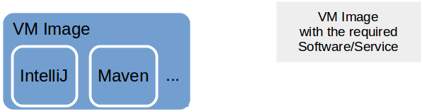

Dev-VMs
from our "Wall of Pain":
"VM for all Apps in Support
-
in order to make sure that we have a running ENV for support"
Problems to be solved
- quick setup a working environment (bugfixing etc.)
- up-to-date documentation of the dev environment
- not messing up my own PC
- independence of mimacom servers (slow VPN)
- quick testing with restoring original situation
VM Image
VM Image - Problems
- very large → Sibad: 14GB (without database)
- no documentation
- lot of effort even for small changes
Vagrant / Ansible

Vagrant / Ansible - Problems
- takes time to build
How can the effort be reduced?
Building blocks

Building blocks
Set of good base VMs → Vagrant boxes
- Base Linux Server (CentOS)
- Linux Server (CentOS) with Oracle Db
- etc.
Building blocks
Set of Ansible roles
- GUI for CentOS
- Java Dev Tools (JDK, IntelliJ, Maven, Git etc.)
- Create Linux user
- Restart Server
- etc.
How does it work?

How does it work?
- blabl